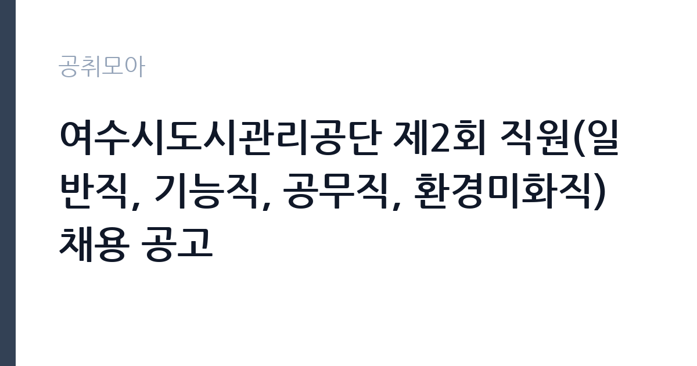

[공공기관] 여수시도시관리공단 제2회 직원(일반직, 기능직, 공무직, 환경미화직) 채용 공고
여수시도시관리공단 · 전남 · 마감 2026-11-19 (D-20) · 출처 나라일터

한눈에 보는 모집 조건
| 기관 | 여수시도시관리공단 |
|---|---|
| 공고명 | 여수시도시관리공단 제2회 직원(일반직, 기능직, 공무직, 환경미화직) 채용 공고 |
| 고용형태 | 공무직 |
| 근무지 | 전남 |
| 게시일 | 2026-10-30 |
| 마감일 | 2026-11-19 (D-20) |
지원자격, 이렇게 읽으세요
- 일반직(직렬: 행정) 1명 기능직(직렬: 기계) 1명 공무직(사무원) 1
- 접수 ~2026-11-19 마감
- 세부 조건은 원문 공고문 확인
공무직 근로자는 공무원이 아니라 근로기준법이 적용되는 근로자이지만 기간의 정함이 없는 무기계약으로 채용되는 경우가 많아 정년까지 근무가 가능합니다. 채용은 공무원 시험과 달리 기관의 자체 전형으로 진행되고 인사 규정과 임금표를 적용받습니다. 이번 공고는 여수시도시관리공단에서 직접 진행하는 자체 전형으로, 응시자격과 제출서류는 공고문에 항목별로 제시됩니다. 직렬별로 요구 자격이 다르므로 본인이 지원할 직렬의 요건만 확인하면 됩니다. 원문에는 자격증 등 요건을 공고문에서 확인하라고 안내되어 있어, 모집분야 표에서 해당 직렬 행을 먼저 확정해야 합니다. 접수는 2026년 11월 13일부터 19일까지이며 온라인 지원 페이지로만 받습니다. 접수처는 접수 시작일 이전에 공단 홈페이지에서 안내되므로 미리 확인해 두십시오. 보훈 제한경쟁이 별도로 표시되어 있습니다. 서류는 접수 마감 이후 보완이 되지 않으므로 자격 요건과 증빙 서류를 마감 전에 모두 갖춰야 합니다. 공고문에 명시된 우대 사항은 해당 여부를 확인해 증빙을 첨부해야 가점이 반영됩니다. 동일 직무 경력자와 경쟁하게 되므로, 관련 경험이 있다면 증명서에 업무 내용이 구체적으로 적히도록 요청하십시오. 이 공고 원문에 적힌 응시 조건 문구는 '고용형태: 정규직, 무기계약직(보훈 제한경쟁 있음) 4.'입니다. 문구를 그대로 읽고 본인 해당 여부를 하나씩 표시해 두면 서류 단계에서 탈락하는 일을 줄일 수 있습니다.
이 공고의 포인트
이 공고의 첫 번째 포인트는 고용 형태입니다. 무기계약으로 채용되면 정년까지 근무가 가능해 재계약 부담이 없습니다. 반대로 기간제로 채용되는 공고라면 계약 기간을 먼저 확인해야 합니다. 두 번째는 업무 범위가 명확하다는 점입니다. 일반직·기능직·공무직·환경미화직 직무로 채용되므로 배치 이후 담당 업무가 크게 흔들리지 않습니다. 세 번째는 근무지입니다. 전남 지역 근무로 수도권 공고에 비해 지원자 분포가 넓지 않아 상대적으로 경쟁이 분산되는 경우가 있습니다. 모집 인원이 적은 만큼 지원자 한 명 한 명의 서류 완성도가 당락에 크게 작용합니다. 같은 직무로 함께 올라온 공고 가운데 접수 마감이 가장 늦은 편이라 준비 시간을 상대적으로 확보할 수 있습니다. 다만 선발 인원이 1명으로 많지 않아 자격을 갖춘 지원자가 몰리면 경쟁률이 높아질 수 있습니다.
전형은 어떻게 진행되나
채용 절차는 공고문에 안내된 순서대로 진행되며, 서류 접수 마감 후에는 추가 접수나 서류 보완이 이뤄지지 않는 것이 원칙입니다. 서류심사에서는 응시자격과 제출서류의 형식 요건을 기계적으로 확인하므로, 경력 증명서의 기간과 직무 내용이 공고의 요건과 정확히 맞아야 합니다. 면접은 지원자 수에 따라 집단면접과 개별면접으로 나뉘고, 직무 관련 질문과 상황 대응 질문이 함께 나옵니다. 합격자 발표는 개별 통보 또는 홈페이지 게시로 이뤄지며 이후 임용 절차가 진행됩니다. 전형 일정이 공고문에 날짜로 명시되어 있으니 달력에 옮겨 두고 준비하십시오.
원문에서 확인한 전형 방식
1. 모집분야: 일반직, 기능직, 공무직, 환경미화직 2. 선발직급: 일반직(주임, 6급), 기능직(9등급) 공무직, 환경미화직(사원) 3. 고용형태: 정규직, 무기계약직(보훈 제한경쟁 있음) 4. 자격요건: 자격증 등 * 공고문을 반드시 확인하시기 바랍니다. 5. 접수기간: 2026. 11. 13.(금) ~ 11. 19.(목) 6. 응시방법: 온라인 지원 페이지를 통한 접수 / 공단 홈페이지 참조 7. 문의처: 061-662-8066 온라인 응시원서 접수처는 접수기간 시작일 이전에 공단 홈페이지를 통해 안내 예정
이런 분께 추천해요
- 4개 직렬 중 하나의 요건을 충족하는 분
- 온라인 접수 기간(11월 13일~19일)에 맞춰 지원할 수 있는 분
- 현장 근무·교대 근무를 수용할 수 있는 분
지원 전 체크리스트
- 응시자격 요건과 경력 기준을 충족하는가 — 경력은 증명서로 입증해야 합니다
- 무기계약 여부와 정년 기준을 공고문에서 확인했는가
- 제출서류 목록을 모두 준비했는가 — 누락 시 서류 단계에서 탈락합니다
- 접수 마감 2026-11-19 이전에 접수 방식을 확인해 제출했는가
모집 일정과 제출 타이밍
2026-10-30에 공고가 올라왔고 접수는 2026-11-19까지입니다. 남은 기간은 20일이며, 이 기간에 자격증 사본과 경력증명서, 주민등록등본 같은 기본 서류를 모두 준비해야 합니다. 경력증명서는 발급에 며칠이 걸리는 경우가 있으니 가장 먼저 신청하십시오. 접수는 온라인과 우편·방문으로 나뉘는 경우가 많고, 우편 접수는 도착 기준으로 판정되므로 마감일 소인만 믿으면 안 됩니다. 면접 일정은 서류 발표 후 개별 통보되므로 제출 후에도 연락을 받을 수 있도록 유지해야 합니다. 임용 예정일이 빠르게 잡히는 공고이므로 현재 일정과 겹치지 않는지 미리 확인하십시오. 전남 근무지는 도서·산간 지역이 포함될 수 있어 근무지 세부 주소를 반드시 확인하십시오. 마감까지 여유가 있어 자격 요건을 천천히 확인하고 준비할 수 있습니다. 선발 인원이 한두 명 수준이라 지원자 개개인의 서류 완성도가 그대로 평가에 반영됩니다.
직무 이해하기: 공공기관
지방공기업 도시관리공단은 지자체가 출자해 공영주차장, 체육·문화시설, 상하수도, 공원·환경 시설을 운영하는 기관입니다. 일반직은 사업 기획과 행정, 기능직은 기계·전기 설비 운용, 공무직과 환경미화직은 현장 시설 관리와 거리 환경 정비를 맡습니다. 직렬에 따라 근무 형태와 배치 부서가 크게 달라지고, 현장 근무는 교대나 조기 출근이 포함되는 경우가 있습니다. 여수시도시관리공단은 여수시가 출자한 지방공기업으로 공영주차장·시설물 관리, 환경미화, 공공 체육·문화시설 운영 같은 사업을 맡습니다. 이번 공고는 일반직(주임·6급), 기능직(9등급), 공무직, 환경미화직(사원)을 한 장에 담은 묶음 채용입니다. 일반직은 사업 기획과 행정, 기능직은 기계·전기 같은 설비 운용, 공무직과 환경미화직은 현장 시설 관리와 거리 환경 정비를 담당합니다. 지원하는 직렬에 따라 배치 부서와 근무 형태가 완전히 달라집니다. 업무는 혼자 처리하기보다 부서 단위로 나눠 진행되므로 담당 구역과 협업 범위를 입사 초에 확인하는 것이 중요합니다. 업무 매뉴얼과 지침이 문서로 정리되어 있어 절차를 익히면 반복 업무는 빠르게 손에 붙습니다.
자기소개서 작성 팁
지원서 첫 문단에서 지원 직렬을 명확히 밝히는 것이 가장 중요합니다. 묶음 공고는 같은 기관에 지원자가 몰리므로 어떤 직렬에 왜 지원했는지가 드러나지 않으면 준비도가 낮게 평가됩니다. 그 직렬의 실무 경험과 자격을 앞세우고 다른 직렬 경험을 섞어 나열하지 마십시오. 공단의 사업 범위를 이해하고 있다는 점을 한 문단 더하면 좋습니다. 문항별 글자 수 제한을 먼저 확인하고, 각 문항의 첫 문장에 결론을 배치하는 방식이 읽기 쉽습니다. 지원 동기는 기관의 어떤 사업에 기여하겠다는 한 문장으로 시작하고, 이어서 본인의 경험을 근거로 붙이십시오. 감점을 피하려면 다른 기관에 보낼 수 있는 범용 문장을 그대로 쓰지 않는 것이 중요합니다. 기관 이름과 사업명이 문장 안에 자연스럽게 들어가야 준비도가 드러납니다.
면접 준비 포인트
면접은 지원 직렬의 직무를 기준으로 진행됩니다. 일반직 지원자는 사업 운영과 예산·계약 실무를, 기능직은 설비 운용과 안전 관리 경험을 준비하십시오. 환경미화직은 현장 근무 경험과 안전 수칙 준수를 봅니다. 왜 여러 직렬 중 그 직렬을 골랐는지 묻는 질문이 나오므로 근거를 함께 준비해야 합니다. 답변은 상황, 판단, 조치의 순서로 정리하면 전달이 분명해집니다. 모르는 질문에는 모른다고 밝히고 확인 방법을 제시하는 편이 억지 답변보다 낫습니다. 마지막에는 근무 의사와 함께 2026-11-19 이후 일정에 언제든 응할 수 있다는 점을 전달하십시오. 답변 시간이 짧게 정해져 있는 경우가 있으므로 핵심 문장을 먼저 말하고 근거를 붙이는 방식이 유리합니다.
급여·근무조건 읽는 법
여수시도시관리공단의 구체적인 보수 수치는 이 공고 원문의 처우 항목과 보수표에서 확인해야 합니다. 공시 자료로 확인되지 않은 금액은 이 글에서 추정해 제시하지 않습니다. 알리오 2025년 결산 공시 기준 공공기관 전체 일반정규직 1인당 평균보수는 7,376만 9천원, 신입사원 평균초임은 4,031만 6천원입니다(무기계약직 미포함). 공무직 환경관리 보수는 기관 임금표의 기본급에 정액급식비·명절휴가비 등이 더해지는 구조입니다. 무기계약 신분이면 정년까지 근무가 가능하고 매년 임금이 조정됩니다. 2026년 적용 최저임금은 시급 10,320원, 월 환산 2,156,880원(주 40시간·209시간 기준)입니다. 고용노동부 고시 제2025-47호로 확정된 금액입니다. 공고문에 금액이 제시되지 않은 항목은 원문 보수표나 처우 설명에서 확인해야 하며 확인되지 않은 수치는 쓰지 않는 것이 원칙입니다. 비교할 때는 월 급여뿐 아니라 상여·명절휴가비·복지포인트·초과근무수당까지 포함한 연간 총액으로 계산하십시오. 기간제라면 계약 기간 동안의 총액을, 무기계약이라면 호봉 상승과 정년까지의 누적 소득을 기준으로 판단하는 편이 정확합니다.
자주 묻는 질문
- 선발 인원은 몇 명인가요?
공고문 기준 1명입니다. 직종별로 인원이 나뉘는 경우가 있으니 모집분야 항목을 함께 확인하십시오. - 근무지는 어디인가요?
전남 지역의 여수시도시관리공단 소속 근무지입니다. 세부 주소와 출퇴근 조건은 원문 공고문에서 확인할 수 있습니다. - 보수는 얼마인가요?
채용 신분(공무직)과 기관 임금 규정에 따라 정해지며 구체적인 금액은 공고문 처우 항목에 제시됩니다. 금액이 공개되지 않은 경우에는 원문의 보수표를 확인하십시오.
함께 보면 좋은 공고
[공공기관] 2026년 하반기 제2차 한국문화예술위원회 휴직대체인력(일반행정) 및 계약직(일반행정) 채용 — 마감 2026-11-13[공공기관] 기장군도시관리공단 2026년도 체험형 청년인턴 채용 재공고 — 마감 2026-11-10[공공기관] [광주보훈병원] 계약직 업무지원직(고객지원_검사코디) - 휴직대체 직원 채용 공고 — 마감 2026-11-09출처: 나라일터 공개정보를 바탕으로 공취모아가 정리한 안내글입니다. 모집 조건·일정은 변경될 수 있으니 지원 전 반드시 원문 공고문을 확인하세요. 본 글은 정보 제공용이며 합격을 보장하지 않습니다.